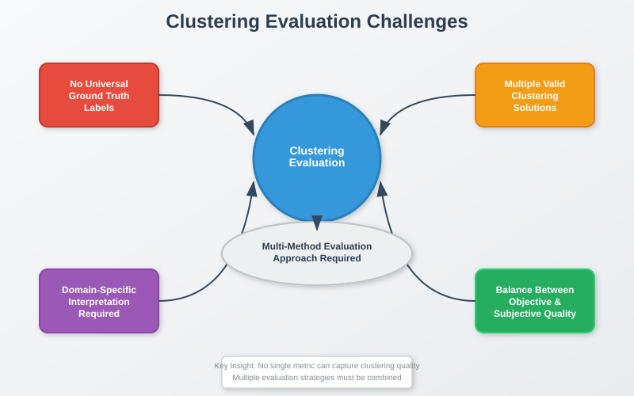
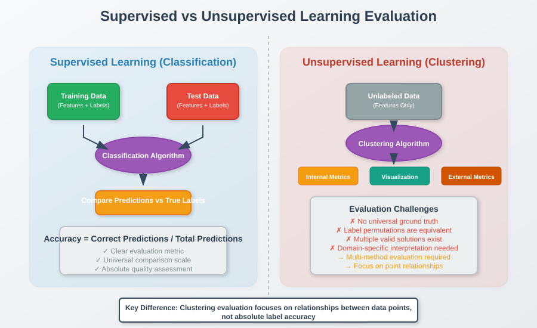
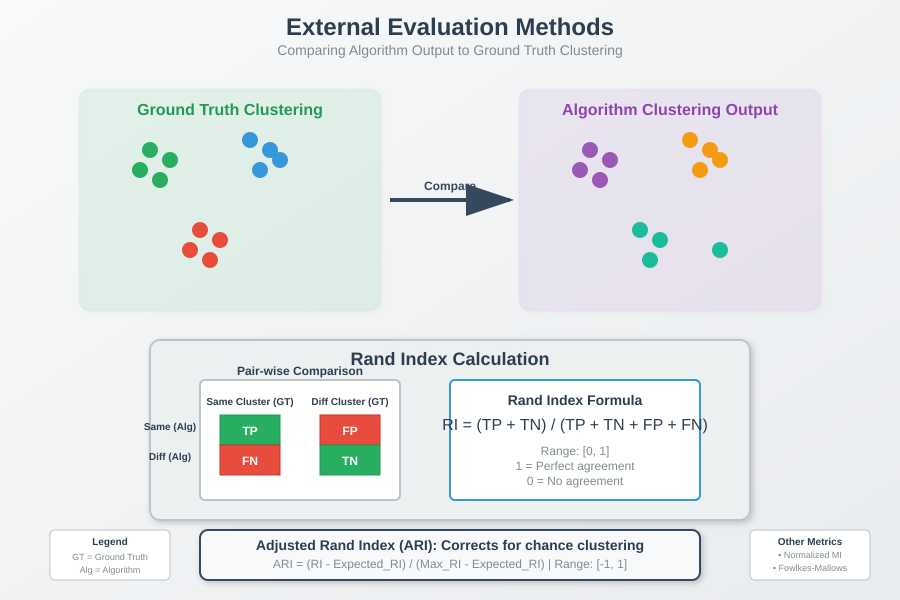
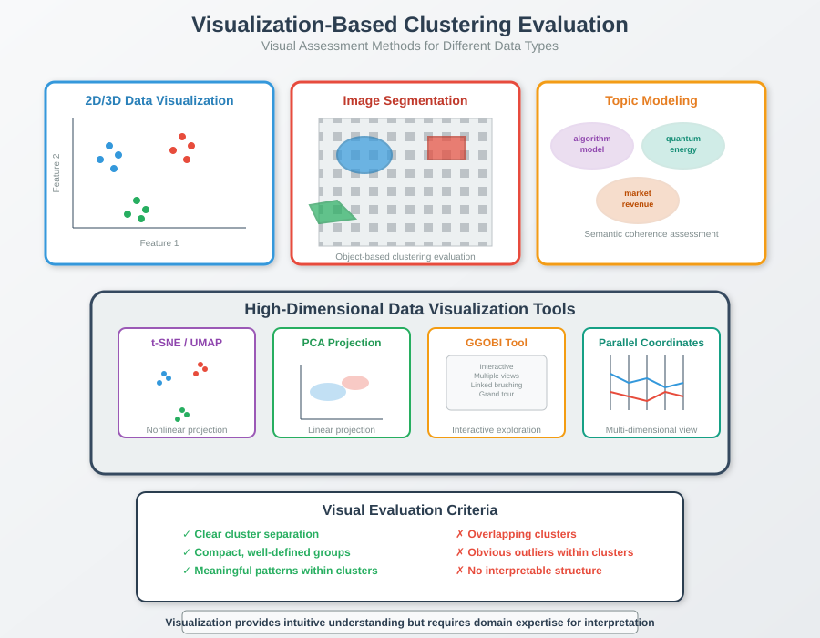

How to Evaluate Clustering Algorithms
📋 Quick Navigation
- Introduction
- Supervised vs Unsupervised Evaluation
- External Evaluation Methods
- Internal Evaluation Methods
- Visualization-Based Evaluation
- Human Evaluation and Crowdsourcing
- Practical Recommendations
- Implementation Examples
- References & Further Reading
🎯 Introduction
Clustering evaluation is one of the most challenging aspects of unsupervised learning. Unlike supervised learning where we have clear labels to measure performance against, clustering algorithms produce results that must be evaluated without a definitive "correct answer." This comprehensive guide explores various methods and strategies for evaluating clustering quality.
Key Challenges in Clustering Evaluation: - No universal ground truth labels - Multiple valid clustering solutions may exist - Domain-specific interpretation required - Balance between objective metrics and subjective quality

📊 Supervised vs Unsupervised Evaluation
Classification Evaluation (Supervised Learning)
In supervised learning, evaluation is straightforward:
Training Process: - Training Data: Data points with known labels - Test Data: Reserved data for evaluation - Evaluation Metric: Percentage of correctly predicted labels
Clustering Evaluation (Unsupervised Learning)
Clustering evaluation is fundamentally different:
Key Differences: - No predefined labels to compare against - Any permutation of cluster labels is equally valid - Focus on relationships between data points rather than specific labels - Multiple evaluation strategies needed
Core Principle:
The only thing that defines clustering quality is whether two data points belong to the same clusters or different clusters in both the algorithm output and any reference clustering.

🎯 External Evaluation Methods
External evaluation methods require ground truth clustering information, which is sometimes available through: - Manual expert labeling - Known cluster structures from domain knowledge - Previously validated clustering results
Rand Index
The Rand Index measures the similarity between two clusterings by examining all pairs of data points:
Where: - TP (True Positive): Pairs that are in the same cluster in both clusterings - TN (True Negative): Pairs that are in different clusters in both clusterings - FP (False Positive): Pairs that are in the same cluster in predicted but different in ground truth - FN (False Negative): Pairs that are in different clusters in predicted but same in ground truth
Adjusted Rand Index (ARI)
The Adjusted Rand Index corrects for chance clustering:
ARI Properties: - Range: [-1, 1] - ARI = 1: Perfect clustering match - ARI = 0: Random clustering - ARI < 0: Worse than random

Other External Metrics
Normalized Mutual Information (NMI):
Fowlkes-Mallows Index:
📏 Internal Evaluation Methods
Internal evaluation methods assess clustering quality using only the data itself, without external ground truth.
K-Means Objective Function
The most basic internal evaluation uses the optimization objective:
Where: - \(k\) = number of clusters - \(C_i\) = cluster \(i\) - \(\mu_i\) = centroid of cluster \(i\)
Limitations: - Only allows relative comparison between clusterings - Doesn't indicate absolute quality - May not capture desired patterns
Silhouette Coefficient
The Silhouette Coefficient measures how well each point fits within its cluster:
Where: - \(a(i)\) = average distance to points in the same cluster - \(b(i)\) = average distance to points in the nearest neighboring cluster
Silhouette Score Properties: - Range: [-1, 1] - \(s(i) \approx 1\): Well-clustered point - \(s(i) \approx 0\): Point on cluster boundary - \(s(i) < 0\): Point likely in wrong cluster
Average Silhouette Score:

Additional Internal Metrics
| Metric | Formula | Interpretation |
|---|---|---|
| Calinski-Harabasz Index | \(\frac{SS_B/(k-1)}{SS_W/(n-k)}\) | Higher values indicate better clustering |
| Davies-Bouldin Index | \(\frac{1}{k}\sum_{i=1}^{k}\max_{j \neq i}\frac{\sigma_i + \sigma_j}{d(c_i, c_j)}\) | Lower values indicate better clustering |
| Dunn Index | \(\frac{\min_{1 \leq i < j \leq k} d(C_i, C_j)}{\max_{1 \leq l \leq k} \Delta(C_l)}\) | Higher values indicate better clustering |
👁️ Visualization-Based Evaluation
Visualization is often the most intuitive method for evaluating clustering quality, especially when dealing with meaningful data patterns.
Direct Visualization Strategies
2D/3D Data Visualization: - Plot data points colored by cluster assignment - Examine cluster separation and compactness - Identify obvious misclassifications
Application Examples:
- Archaeology: Artifact clustering by physical properties
- Image Segmentation: Object separation in images
- Topic Modeling: Word clustering for semantic coherence
High-Dimensional Data Visualization
Tools for High-Dimensional Data: - GGOBI: Interactive high-dimensional data visualization - t-SNE: Non-linear dimensionality reduction - UMAP: Uniform Manifold Approximation and Projection - PCA: Principal Component Analysis for linear reduction
Health Metrics Example:
Features: [age, daily_calories, water_intake, alcohol_consumption,
miles_driven, exercise_minutes, sleep_hours, stress_level]

Visualization Quality Assessment
Qualitative Indicators: - Clear cluster separation - Compact, well-defined groups - Meaningful patterns within clusters - Absence of obvious outliers within clusters
👥 Human Evaluation and Crowdsourcing
Manual Expert Evaluation
Expert Assessment Criteria: - Domain knowledge application - Semantic coherence of clusters - Practical utility of groupings - Interpretability of results
Crowdsourcing Evaluation
Platforms and Approaches: - Amazon Mechanical Turk: Large-scale human evaluation - Specialized annotation platforms: Domain-specific evaluation - Academic collaborations: Expert panel assessments
Crowdsourcing Design Principles: - Clear evaluation criteria - Multiple evaluators per clustering - Quality control mechanisms - Cost-benefit analysis
Limitations: - Time and monetary costs - Potential evaluator bias - Scalability challenges - Subjective interpretation differences
⚡ Practical Recommendations
Evaluation Strategy Framework
- Define Evaluation Goals
- What patterns should the clustering reveal?
- What will the clustering be used for?
-
What level of accuracy is required?
-
Choose Appropriate Methods
IF ground_truth_available: Use external_evaluation_metrics() ELSE: Combine internal_metrics() + visualization() + domain_expertise() -
Multi-Method Approach
- Never rely on a single evaluation metric
- Combine quantitative and qualitative assessment
- Consider domain-specific requirements
Metric Selection Guidelines
| Data Type | Recommended Metrics | Visualization Tools |
|---|---|---|
| Text/NLP | Silhouette + Manual coherence | Word clouds, topic visualization |
| Images | Visual inspection + Silhouette | Direct image display |
| Numerical | Multiple internal metrics | t-SNE, PCA plots |
| Mixed Type | Domain-specific + Silhouette | Custom visualizations |
Common Pitfalls to Avoid
- Over-reliance on single metrics
- Ignoring domain knowledge
- Comparing metrics across different data types
- Not validating results with stakeholders
💻 Implementation Examples
Google Colab Integration

Python Implementation
from sklearn.metrics import adjusted_rand_score, silhouette_score
from sklearn.cluster import KMeans
import matplotlib.pyplot as plt
import numpy as np
def evaluate_clustering(X, labels_true=None, labels_pred=None, n_clusters=3):
"""
Comprehensive clustering evaluation
"""
results = {}
# Internal evaluation
if labels_pred is not None:
results['silhouette'] = silhouette_score(X, labels_pred)
results['inertia'] = KMeans(n_clusters=n_clusters).fit(X).inertia_
# External evaluation (if ground truth available)
if labels_true is not None and labels_pred is not None:
results['ari'] = adjusted_rand_score(labels_true, labels_pred)
results['nmi'] = normalized_mutual_info_score(labels_true, labels_pred)
return results
# Example usage
X = np.random.randn(100, 2)
kmeans = KMeans(n_clusters=3)
labels_pred = kmeans.fit_predict(X)
evaluation_results = evaluate_clustering(X, labels_pred=labels_pred)
print(f"Silhouette Score: {evaluation_results['silhouette']:.3f}")
Hugging Face Models
- Sentence Transformers: For text clustering evaluation
- CLIP Models: For multimodal clustering assessment
- Clustering-specific models: Domain-adapted evaluation tools
📚 References & Further Reading
Academic Papers
- Rand, W. M. (1971). "Objective Criteria for the Evaluation of Clustering Methods" - Journal of the American Statistical Association
- Hubert, L. & Arabie, P. (1985). "Comparing partitions" - Journal of Classification
- Rousseeuw, P. J. (1987). "Silhouettes: A graphical aid to the interpretation and validation of cluster analysis" - Journal of Computational and Applied Mathematics
- Strehl, A. & Ghosh, J. (2002). "Cluster ensembles—a knowledge reuse framework for combining multiple partitions" - Journal of Machine Learning Research
ArXiv Papers
- Clustering Validation Techniques - Comprehensive survey of modern validation methods
- Deep Clustering Evaluation - Evaluation strategies for neural clustering approaches
Books and Resources
- "Pattern Recognition and Machine Learning" by Christopher Bishop - Chapter on clustering evaluation
- "The Elements of Statistical Learning" by Hastie, Tibshirani, and Friedman - Unsupervised learning evaluation
- Scikit-learn Documentation: Clustering Performance Evaluation
Tools and Libraries
- Scikit-learn: Comprehensive clustering evaluation metrics
- GGOBI: Interactive visualization for high-dimensional data
- Yellowbrick: Machine learning visualization library with clustering support
- Plotly: Interactive clustering visualization tools
Last Updated: September 2025 | Created for MkDocs Material Theme